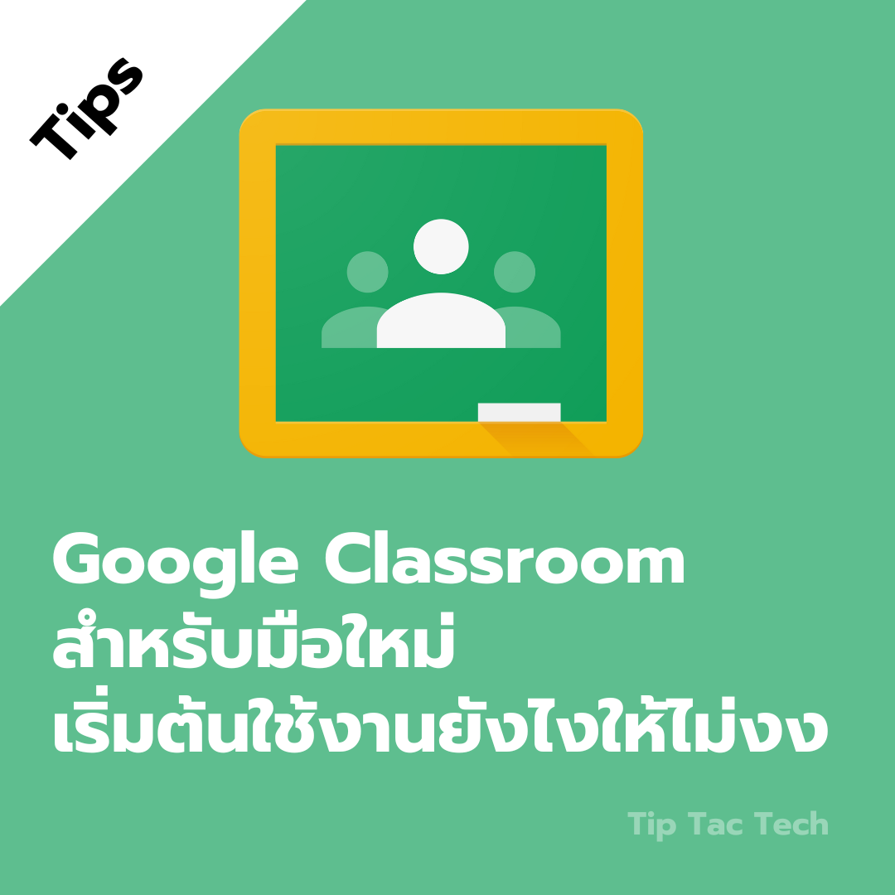
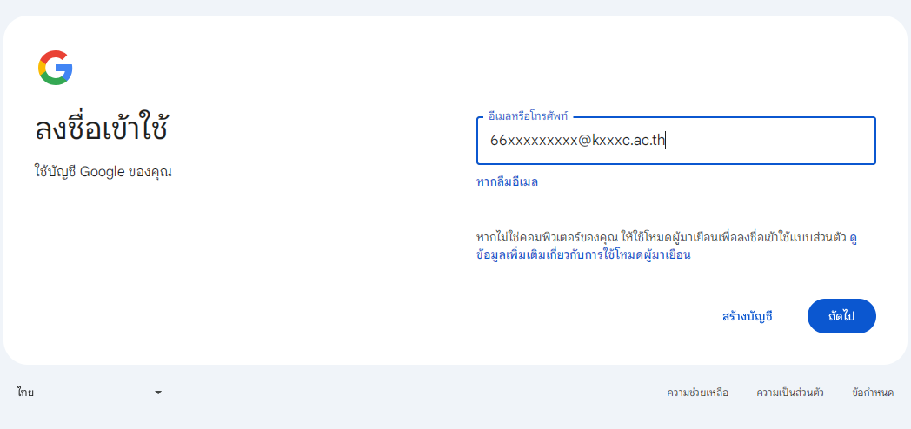
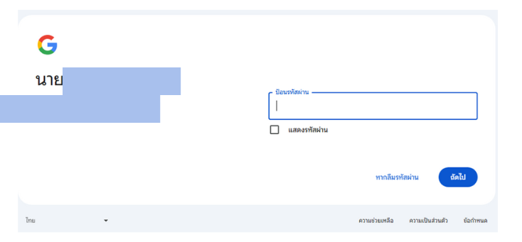
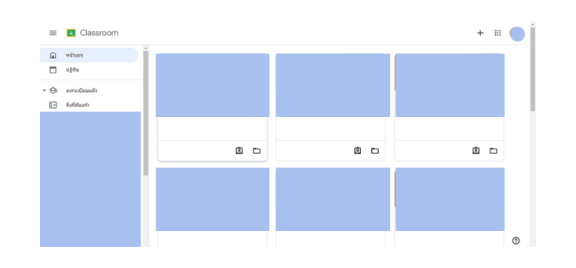

Google Classroom สำหรับมือใหม่: เริ่มต้นใช้งานยังไงให้ไม่งง
สวัสดีครับทุกคน วันนี้เราจะมาเรียนรู้วิธีเข้าใช้งาน Google Classroom โดยใช้อีเมลของวิทยาลัยกันนะครับ
ขั้นตอนที่ 1: เตรียมพร้อม
อุปกรณ์: คอมพิวเตอร์, แท็บเล็ต, หรือสมาร์ทโฟนที่เชื่อมต่ออินเทอร์เน็ต
บัญชีอีเมล: บัญชีอีเมลของวิทยาลัยที่ได้รับจากผู้ดูแลระบบ
ตัวอย่างเช่น 66xxxxxxxxx@xxxxx.com เป็นต้น
รหัสผ่าน: รหัสผ่านที่ได้รับจากผู้ดูแลระบบ
ขั้นตอนที่ 2: เข้าสู่ระบบ Google Classroom
เปิดเบราว์เซอร์: พิมพ์ https://classroom.google.com ในแถบที่อยู่ของเว็บเบราว์เซอร์
ลงชื่อเข้าใช้:

คลิก ถัดไป เพื่อใส่รหัสผ่านที่ได้รับจากผู้ดูแลระบบ

คลิก ถัดไป เพื่อเข้าสู่ระบบ
เมื่อเข้าสู่ระบบเสร็จสิ้น เว็บไซต์จะพาไปยังหน้าหลักของ Google Classroom

เคล็ดลับเพิ่มเติม:
เปลี่ยนรหัสผ่าน: ควรเปลี่ยนรหัสผ่านเริ่มต้นเป็นรหัสที่จำง่ายและปลอดภัย
ดาวน์โหลดแอป: สามารถดาวน์โหลดแอป Google Classroom บนมือถือเพื่อความสะดวกในการใช้งาน
ศึกษาเพิ่มเติม: มีแหล่งข้อมูลและคู่มือการใช้งาน Google Classroom อีกมากมายที่สามารถค้นหาได้
หวังว่าคู่มือนี้จะเป็นประโยชน์ในการใช้งาน Google Classroom นะครับ ขอให้ทุกคนโชคดีกับการเรียน!]